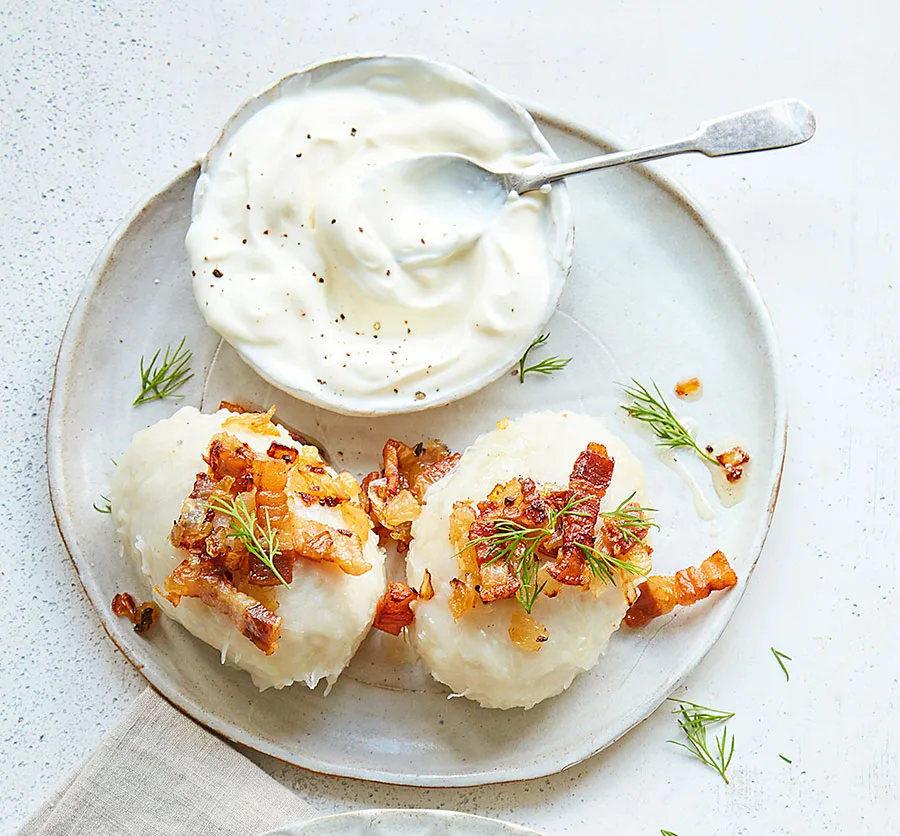

Cepelinai

Lithuanian potato dumplings made from grated and riced potatoes and stuffed with ground meat
Lithuanian potato-meat dumplings are known as zeppelins or cepelinai because of their shape. These hearty and rich dumplings take some time to make, but they are well worth the effort. Don't be intimidated by the recipe as it has a few steps in order to make each component, including the filling, the dumpling, and the gravy.
Ingredients
- 1 pound ground pork, or an equal mix of pork, beef, and veal
- 1 medium onion, peeled and finely chopped
- 1 1/2 teaspoons kosher salt
- 1/4 teaspoon freshly ground black pepper
- 1 large egg, beaten
- 1 tablespoon freshly squeezed lemon juice
- 8 large Idaho potatoes, peeled and finely grated, about 5 pounds
- 2 large Idaho or Russet potatoes, about 1 1/2 pounds, peeled, boiled, and riced
- 1 medium onion, finely grated
- 1 1/2 teaspoons kosher salt, more as needed
- 1 tablespoon cornstarch
Steps
- In a large bowl, mix together ground meat, finely chopped onion, the salt, a few grinds of pepper, and the egg until well combined.
- Add the lemon juice to the raw grated potatoes so they don't turn brown.
- Place them in a fine-mesh cheesecloth or cotton dishtowel, and twist over a large bowl to get rid of the excess water.
- Pour off the water, reserving the potato starch at the bottom of the bowl.
- Unwrap the cheesecloth and place the raw potatoes in the bowl with the potato starch you reserved from the bottom of the bowl.
- Put a large stockpot of well-salted water on to boil.
- To form the zeppelins, take about 1 cup of dumpling mixture and pat it flat in the palm of the hand.
- Place 1/4 cup or more of meat mixture in the center and, using slightly dampened hands, fold the potato mixture around the meat into a football shape, sealing well. Continue until both mixtures are used.
- Carefully lower dumplings (in batches if necessary to prevent crowding) into salted, boiling water to which 1 tablespoon of cornstarch has been added (to prevent dumplings from falling apart). Make sure water returns to the boil; reduce the heat to low and continue simmering until the filling is cooked through, 20 to 25 minutes.
- Remove dumplings with a slotted spoon or strainer, drain briefly on a clean dish towel and place on a heated platter.